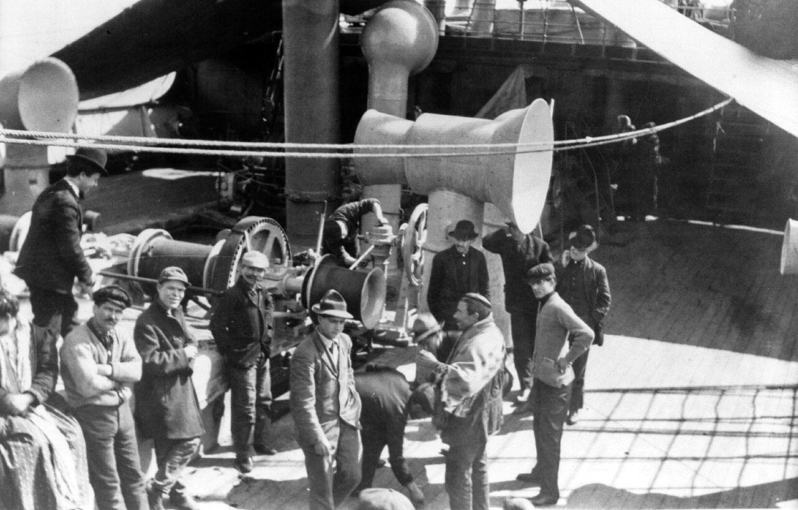
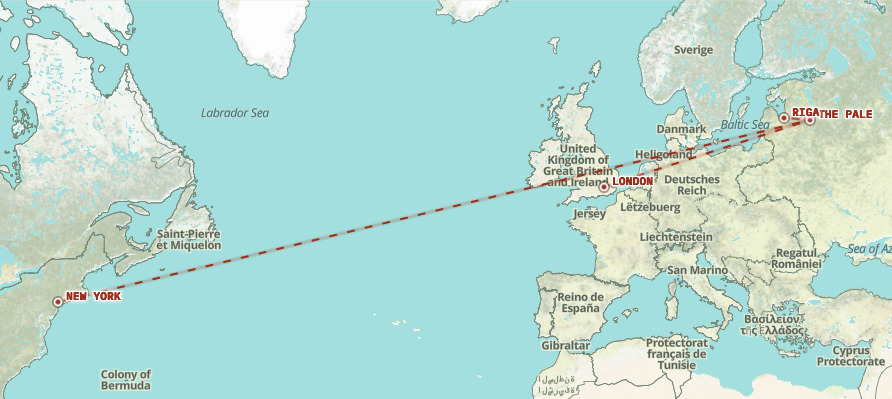
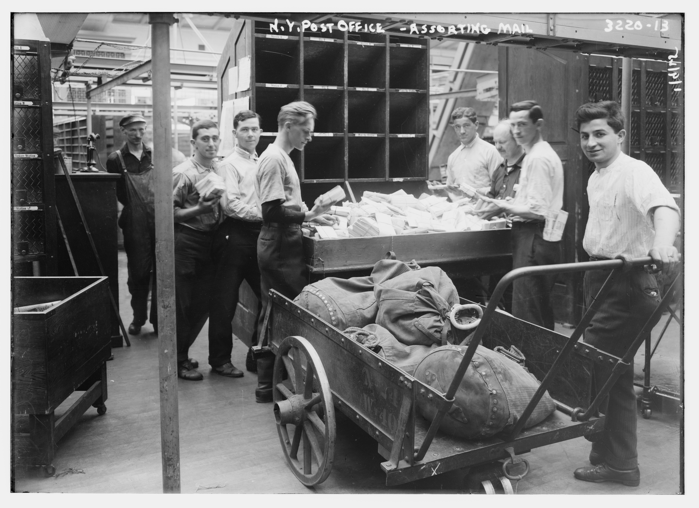

A Family Archive, 1900–1926
Scroll to begin ↓
A box of about 140 letters was found in storage in Vancouver.
Half in English cursive. Half in Yiddish — that no one left in the family could read.
They turned out to be Sam and Dora Diamondstein's — great-grandparents of one of this site's creators, writing to each other in the early 1900s.
AI translated and transcribed every one, then helped rebuild the story from family trees, research, and memory.
This web site is what resulted.
↓Also: a real experiment in using AI to do genealogical research honestly.
See How This Was Made
There's no one right way through this. Choose how you want to explore this letters archive.


